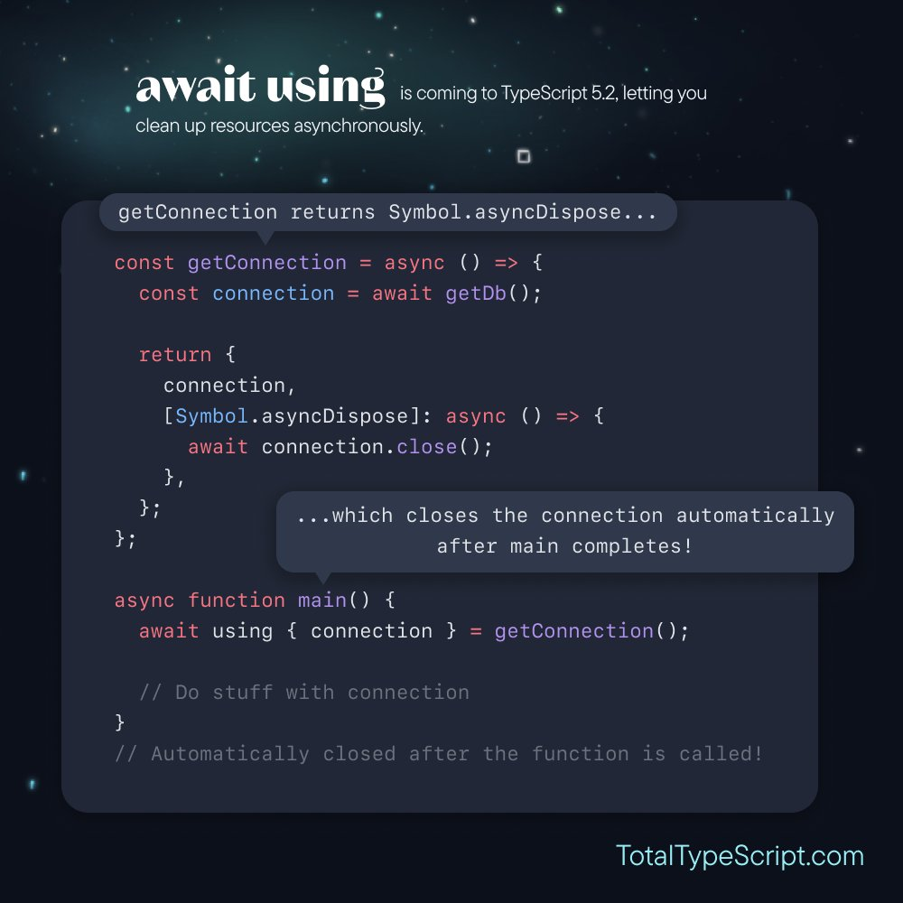

타입스크립트 5.2의 새로운 키워드: 'using'
원문: https://www.totaltypescript.com/typescript-5-2-new-keyword-using
타입스크립트 5.2에서 새로운 키워드인 'using'이 도입되었습니다. 이는 Symbol.dispose 함수를 통해 스코프를 벗어날 때 모든 것을 폐기하는 데 사용할 수 있습니다.
{
const getResource = () => {
return {
[Symbol.dispose]: () => {
console.log('Hooray!')
}
}
}
using resource = getResource();
} // 'Hooray!'가 console에 로깅됩니다.이는 최근 3단계에 도달한 TC39 제안을 기반으로 하며, 자바스크립트에 적용될 것임을 뜻합니다.
using은 파일 처리, 데이터베이스 연결과 같은 리소스를 관리하는데 매우 유용합니다.
`Symbol.dispose`
Symbol.dispose는 자바스크립트의 새로운 전역 심볼입니다.
Symbol.dispose에 함수가 할당된 모든 것은 '리소스', 즉 "특정 수명을 가진 객체"로 간주되며 using 키워드와 함께 사용할 수 있습니다.
const resource = {
[Symbol.dispose]: () => {
console.log("Hooray!");
},
};`await using`
또한 비동기적으로 처리해야 하는 리소스를 다루기 위해 Symbol.asyncDispose 와 await using을 사용할 수도 있습니다.
const getResource = () => ({
[Symbol.asyncDispose]: async () => {
await someAsyncFunc();
},
});
{
await using resource = getResource();
}이렇게 하면 계속 진행하기 전에 Symbol.asyncDispose 함수를 기다립니다.
이는 데이터베이스 연결과 같이 프로그램을 계속하기 전에 연결이 종료되었는지 확인해야 하는 리소스에 유용합니다.
사용 사례
파일 처리using을 사용하면, node에서 파일 핸들러를 통해 파일 시스템에 접근하는 것이 훨씬 쉬워질 수 있습니다.
using을 사용하지 않으면 다음과 같습니다.
import { open } from "node:fs/promises";
let filehandle;
try {
filehandle = await open("thefile.txt", "r");
} finally {
await filehandle?.close();
}using을 사용하면 다음과 같습니다:
import { open } from "node:fs/promises";
const getFileHandle = async (path: string) => {
const filehandle = await open(path, "r");
return {
filehandle,
[Symbol.asyncDispose]: async () => {
await filehandle.close();
},
};
};
{
await using file = getFileHandle("thefile.txt");
// file.filehandle를 사용해 작업을 수행합니다.
} // 자동으로 폐기됩니다!데이터베이스 연결 관리는 C#에서 using의 일반적인 사용 사례입니다.
using을 사용하지 않으면 다음과 같습니다.
const connection = await getDb();
try {
// connection으로 작업을 수행합니다.
} finally {
await connection.close();
}using을 사용하면 다음과 같습니다:
const getConnection = async () => {
const connection = await getDb();
return {
connection,
[Symbol.asyncDispose]: async () => {
await connection.close();
},
};
};
{
await using { connection } = getConnection();
// connection으로 작업 수행
} // 자동으로 연결이 닫힙니다!